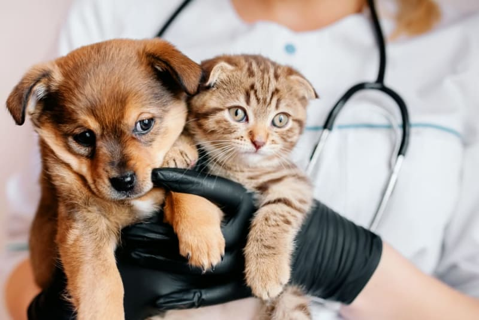

Our furry friends bring joy, companionship, and unconditional love into our lives. As responsible pet owners, it’s our duty to ensure their well-being and happiness. One crucial aspect of pet care that often gets overlooked is regular check-ups with a veterinarian. Just like humans, pets benefit immensely from routine health examinations. we’ll explore the importance of regular check-ups for pets and why they should be an integral part of your pet’s healthcare regimen.
Regular check-ups can help veterinarians detect health issues in their early stages. Many illnesses and conditions can be asymptomatic or have subtle signs that may go unnoticed by pet owners. During a check-up, your veterinarian can conduct a thorough physical examination, assess vital signs, and perform diagnostic tests if necessary. Catching problems early often means more effective treatment and a better prognosis for your pet.
Prevention is always better than cure, and this holds true for our pets as well. Regular check-ups provide an opportunity for veterinarians to discuss preventative measures like vaccinations, flea and tick control, heartworm prevention, and dental care. These measures can help your pet avoid common illnesses and maintain good overall health.
Every pet is unique, and their healthcare needs can vary. Regular check-ups allow your veterinarian to create a personalized healthcare plan tailored to your pet’s age, breed, lifestyle, and specific health risks. This individualized approach ensures that your pet receives the care they need to thrive.
Obesity is a common issue in pets and can lead to a host of health problems, including diabetes, joint issues, and heart disease. During check-ups, veterinarians can monitor your pet’s weight and body condition, offering guidance on nutrition and exercise to help your pet maintain a healthy weight.
Oral health is a vital aspect of your pet’s overall well-being. Dental problems can lead to pain, infection, and difficulty eating. Regular check-ups often include dental examinations, and your veterinarian can recommend dental cleanings or at-home dental care routines to keep your pet’s teeth and gums in excellent condition.
Your pet’s behavior can provide valuable insights into their emotional and physical health. Veterinarians are trained to recognize behavioral changes that may indicate underlying medical issues. Regular check-ups offer an opportunity to discuss any concerns you have about your pet’s behavior and receive guidance on addressing them.
Regular veterinary care can contribute to a longer, happier life for your pet. By addressing health issues promptly, managing chronic conditions, and providing preventative care, you can help ensure that your furry friend enjoys a high quality of life throughout their years.
Regular check-ups for pets are not just recommended; they are essential for maintaining their health and well-being. As loving pet owners, we owe it to our four-legged companions to provide them with the best possible care. By scheduling routine veterinary appointments, you’re taking a proactive step in ensuring your pet’s longevity and happiness. So, don’t wait – make that appointment today and give your beloved pet the gift of good health.